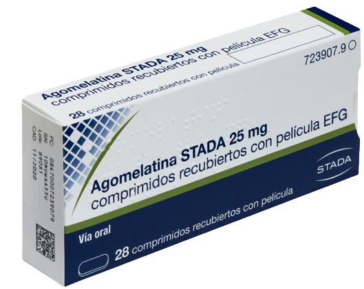
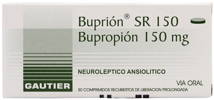
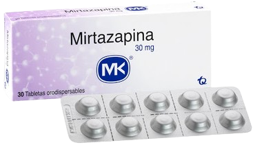
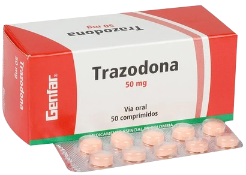

Agomelatina
Tiene un impacto significativo sobre el sueño de los pacientes con un trastorno depresivo mayor, con una mejoría de la calidad del sueño.
Mecanismo de Acción
Aumenta la liberación de dopamina y noradrenalina, específicamente en la corteza frontal, y no tiene influencia en los niveles extracelulares de serotonina.
Indicaciones
Depresión mayor
Contraindicaciones
Hipersensibilidad
Insuficiencia hepática
Presentaciones
-
Comprimidos de 25 mg
Cuidados de enfermería
No iniciar nuevos tratamientos con agomelatina en pacientes de 75 años de edad o mayores.
Antes de iniciar el tratamiento realizar pruebas de función hepática y no iniciar si los valores de las enzimas hepáticas superan en 3 veces el límite superior normal.
Monitorización de la función hepática periódicamente (a las 3, 6, 12 y 24 semanas).
Informar a los pacientes en tratamiento sobre los signos y síntomas de daño hepático.
Efectos adversos
Cefalea, mareo, somnolencia, insomnio, migraña, náuseas, diarrea, estreñimiento, dolor abdominal, vómitos, hiperhidrosis, dolor de espalda, cansancio; aumentos de transaminasas, ansiedad, retención urinaria, acatisia.
Bupropion
Fármaco de la clase de los antidepresivos atípicos, cuyas principales indicaciones son el tratamiento de depresión y la dependencia de nicotina.
Mecanismo de Acción
Inhibidor selectivo de la recaptación neuronal de catecolaminas con mínimo efecto sobre la recaptación de indolaminas.
Indicaciones
Depresión mayor
Adicción a la nicotina
Contraindicaciones
Hipersendibilidad
Concomitante con IMAO
Trastorno convulsivo
Bulimia o anorexia nerviosa
Cirrosis hepática grave
Presentaciones
-
Tabletas de 150 mg
Cuidados de enfermería
No administrar con ISRS.
Vigilar estado de consciencia.
Dosis máxima 300 mg/día.
Vigilar convulsiones.
Toma de la tensión arterial y la frecuencia cardiaca antes del inicio de tratamiento y, posteriormente, la monitorización regular de dichas constantes mientras el paciente lo reciba.
No administrar durante embarazo y lactancia.
Efectos adversos
Urticaria, anorexia, insomnio, agitación, cefalea, temblor, mareo, alteraciones del sentido del gusto, alteración de la visión, acúfenos, aumento de presión arterial, rubor, sequedad de boca, náuseas y vómitos,erupción cutánea, prurito, sudoración, fiebre, dolor torácico, astenia, hiponatremia.
Mirtazapina
Antidepresivo clasificado como un antagonista de los receptores de serotonina y noradrenalina. Modula estos neurotransmisores de forma indirecta.
Mecanismo de Acción
Aumenta la neurotransmisión noradrenérgica y serotoninérgica a nivel central.
Indicaciones
Depresión mayor
Contraindicaciones
Hipersensibilidad
Concomitante con IMAO
< 18 años
Primer trimestre del embarazo
Presentaciones
-
Tabletas de 30 mg
Cuidados de enfermería
Administrarla por la noche y advertir al paciente de no conducir ni operar maquinaria.
Vigilancia del peso y el apetito.
Evaluar síntomas como la sequedad de boca y el estreñimiento, y proporcionar recomendaciones.
Evaluación de la ideación suicida.
Monitoreo de cambios en el estado de ánimo y respuesta terapéutica.
Efectos adversos
Frecuentes:Somnolencia, sedación, estreñimiento, sequedad de mucosas, aumento del apetito y del peso corporal.
Poco frecuentes:Vértigo, confusión, sueños anormales, pensamientos anormales, hipotensión, vasodilatación, edema periférico, náusea, vómito, anorexia, dolor abdominal, aumento de la frecuencia urinaria, disnea, edema facial.
Trazodona
Antidepresivo atípico que se utiliza principalmente para tratar la depresión mayor, aunque también se prescribe comúnmente para el tratamiento del insomnio debido a su efecto sedante.
Mecanismo de Acción
Es un inhibidor de la recaptación de serotonina y un antagonista de los receptores de 5HT2.
Indicaciones
Depresión mayor
Estados mixtos de depresión y ansiedad
Contraindicaciones
Hipersensibilidad IAM
Intoxicación por alcohol o con hipnóticos
Presentaciones
-
Comprimidos de 50 mg
Cuidados de enfermería
Administrarla antes de dormir.
Monitorización de la presión arterial.
Observar signos de ideación suicida o cambios en el estado de ánimo.
Documentar cualquier mejoría en los síntomas de insomnio y depresión, así como la presencia de efectos adversos.
Efectos adversos
Síndrome de secreción inadecuada de hormona antidiurética, pérdida de peso, aumento del apetito, conductas suicidas o ideación suicida, confusión, insomnio, desorientación, reacción agresiva, alucinaciones, pesadillas, disminución de la libido, síndrome de abstinencia, nauseas, vómitos, boca seca, estreñimiento, diarrea, dolor de estómago.